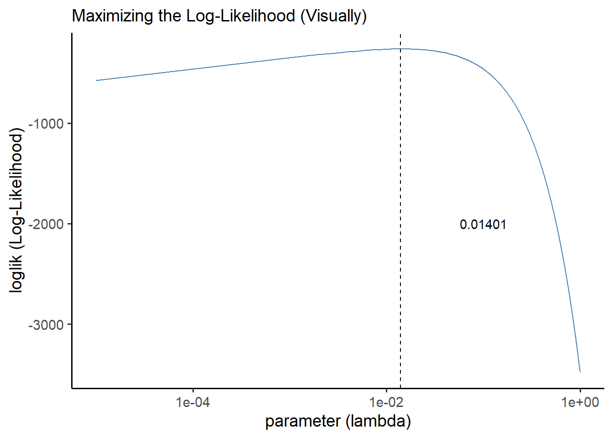
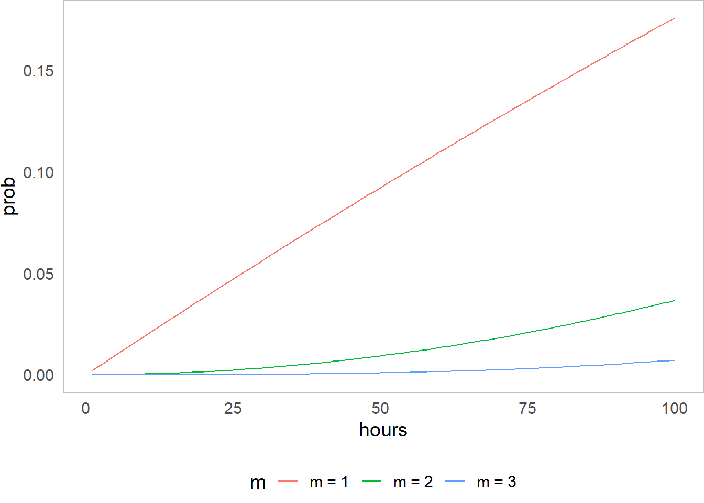

6 Workshop: Useful Life Distributions (Weibull, Gamma, & Lognormal)
In this workshop, we’re going to continue learning some R functions for working with common life distributions, specifically the Weibull, Gamma, and Log-Normal distributions.
Getting Started
Load Packages
Let’s start by loading the tidyverse package. We’ll also load mosaicCalc, for taking derivatives and integrals (eg. D() and antiD()).
# Load packages
library(tidyverse)
library(mosaicCalc)Load Data
In this workshop, we’re going to use a dataset of crop lifetimes! (Agriculture needs statistics too!) For each crop (id), we measured its lifespan in days from the day its seed is planted to the time it is ripe (usually about 90 days).
# Import crop lifespan data!
crops <- read_csv("workshops/crops.csv")
6.1 Maximum Likelihood Estimation (MLE)
In our last few workshops, we learned that the exponential distribution does a pretty good job of approximating many life distributions, and that we can evaluate the fit of a distribution using a chi-squared test. In this workshop, we’ll learn several alternative, related distributions that might fit your data even better depending on the scenario. But modeling any data using a distribution requires that we know the parameters that best match the observed data. This can be really hard, as we found out with \(\hat{\lambda}\) in the exponential distribution.
Below, we’ll learn a computational approach called Maximum Likelihood Estimation (MLE), that will help us find the true (most likely) values for any parameter in any dataset. It’s pretty robust if the number of failures is ‘large’ enough, where ‘large’ counts as >10 (which is really small!).
6.1.1 Likelihood Function
MLE involves 3 ingredients:
sample: a vector of raw empirical dataprobability density function (PDF): tells us probability (relative frequency) of each value in a sample occurring.likelihood function: tells us probability of getting this EXACT sample, given the PDF values for each observed data point.
We can get the “probability” of any sample by multiplying the density function f(t) at each data point \(t_{i}\), for r data points. Multiplication indicates joint probability, so this product really means how likely is is to get this specific sample. We call it the likelihood of that sample.
\[ LIK = \prod_{i = 1}^{r}{ f(t_i) } = f(t_1) \times f(t_2) \times ... f(t_n) \]
# Let's write a basic pdf function
d = function(t, lambda){lambda * exp(-t*lambda) }
# Let's imagine we already knew lambda...
mylambda = 0.01
crops %>%
# Calculate probability density function for observed data
mutate(prob = d(days, lambda = mylambda)) %>%
summarize(
# Let's calculate the likelihood
likelihood = prob %>% prod(),
# Since that's a really tiny number,
# let's take its log to get log-Likelihood
loglik = prob %>% prod() %>% log())## # A tibble: 1 × 2
## likelihood loglik
## <dbl> <dbl>
## 1 7.55e-116 -265.Technically, our likelihood above shows the joint probability of each of these observed values occurring together supposing that:
they have an exponential probability density function (PDF), and…
that the parameter
lambdain that PDF equals0.01.
So we can get different (higher/lower) likelihoods of these values occuring together if we supply (1) different parameter values and therefore (2) a different hypothesized PDF. The most accurate parameters will be the ones that maximize the likelihood.
In practice though, the likelihood is teeny-tiny, and multiplying tiny numbers is hard! Fortunately…
the log of a tiny value makes it bigger and easier to read and compute.
the
logof a product of values actually equals the sum of thelogof those values (see equation below!).
\[ log ( \ L(t) \ ) = \log\prod_{i=1}^{n}{ f(t_i) = \sum_{i=1}^{n}\log( \ f(t_i) \ ) } \]
ll = function(data, lambda){
# Calculate Log-Likelihood,
# by summing the log
d(t = data, lambda) %>% log() %>% sum()
}
6.1.2 Maximizing with optim()
We can use the optim() function from base R to:
run our function (
fn= …) many times, varying the value oflambda(or any parameter).supply any other parameters like
data = crops$daysto each run.identify the log-likelihood that is greatest (if
control = list(fnscale = -1)); by default,optim()actually minimizes otherwise.return the corresponding value for
lambda(or any other parameter).optim()will output a$par(our parameter estimate(s)) and$value(the maximum log-likelihood).
# Maximize the log-likelihood!
optim(par = c(0.01), data = crops$days, fn = ll, control = list(fnscale = -1))## $par
## [1] 0.014375
##
## $value
## [1] -262.167
##
## $counts
## function gradient
## 18 NA
##
## $convergence
## [1] 0
##
## $message
## NULL
6.1.3 Under the Hood
Wondering what’s happening inside optim()? Good news: it’s not too tough. We can actually code and visualize it ourselves!
First, let’s get all the log-likelihoods in that interval.
# Let's
manyll <- data.frame(parameter = seq(from = 0.00001, to = 1, by = 0.001)) %>%
# For each parameter, get the loglikelihood
group_by(parameter) %>%
summarize(loglik = ll(data = crops$days, lambda = parameter))
# Check a few
manyll %>% head(3)## # A tibble: 3 × 2
## parameter loglik
## <dbl> <dbl>
## 1 0.00001 -576.
## 2 0.00101 -348.
## 3 0.00201 -317.Let’s maximize the log-likelihood manually…
# Now find the parameter that has the greatest log-likelihood
output <- manyll %>%
filter(loglik == max(loglik))
#check it
output## # A tibble: 1 × 2
## parameter loglik
## <dbl> <dbl>
## 1 0.0140 -262.Now, let’s visualize it!
ggplot() +
geom_line(data = manyll, mapping = aes(x = parameter, y = loglik), color = "steelblue") +
geom_vline(xintercept = output$parameter, linetype = "dashed") +
theme_classic(base_size = 14) +
labs(x = "parameter (lambda)", y = "loglik (Log-Likelihood)",
subtitle = "Maximizing the Log-Likelihood (Visually)") +
# We can actually adust the x-axis to work better with log-scales here
scale_x_log10() +
# We can also annnotate our visuals like so.
annotate("text", x = 0.1, y = -2000, label = output$parameter)
6.1.4 Multi-parameter optimization
Multi-parameter optimization works pretty similarly. We can use optim() for this too!
The key here is that
optim()only varies whatever values we supply tooptim(par = ...).So if we have multiple parameters, like the
meanandsdfor the normal distribution, we need to put both parameters into one vector in our inputpar, like so:
# Let's write a new function
ll = function(data, par){
# Our parameters input is now going to be vector of 2 values
# par[1] gives the first value, the mean
# par[2] gives the second value, the standard deviation
dnorm(data, mean = par[1], sd = par[2]) %>%
log() %>% sum()
}Now, let’s maximize!
# Let's optimize it!
# put in some reasonable starting values for 'par' and it optim() will do the rest.
optim(par = c(90, 15), data = crops$days, fn = ll, control = list(fnscale = -1))## $par
## [1] 69.65196 47.56853
##
## $value
## [1] -264.0527
##
## $counts
## function gradient
## 51 NA
##
## $convergence
## [1] 0
##
## $message
## NULLThat was ridiculously easy! Let’s compare to their known values:
crops %>%
summarize(mu = mean(days),
sigma = sd(days))## # A tibble: 1 × 2
## mu sigma
## <dbl> <dbl>
## 1 69.6 48.0Almost spot on! Pretty good for an estimation technique!
6.1.5 MLE with Censored Data
But what do we do if we need to estimate parameters with MLE, but our data is censored (eg. time censored, or cross-tabulated?) Well, fortunately, same general rules apply!
\[ LIK = k \times ( \Pi_{i = 1}^{r}{f(t_i) \ } \times [1 - F(T_{max})]^{n-r} ) \approx \prod_{i=1}^{r}{ f(t_i) } \times R(T_{max})^{n-r} \]
We can re-write the likelihood function as the joint probability of each time to failure \(f(t_i)\) for \(r\) total failures that did occur, times the cumulative probability that they did not fail by the end of the study period \(T_{max}\) for \(n - r\) potential failures that did not occur.
Just like when estimating lambda though, we know that there’s room for error, so we can calculate a \(k\) factor like before to upweight or downweight our likelihood statistic, giving us upper and lower confidence intervals. Most often, we are looking for the precise estimate of parameters, not upper and lower confidence intervals for them, so in those cases, \(k\) can be omitted, simplifying down to the right-side equation above.
Let’s try a few applications of this formula below.
6.1.5.1 Time Censored Data
Suppose we actually had \(n = 75\) crops, but we only ever saw \(r = 50\) of them fail, and we stopped recording after 200 days. How would we estimate the maximum likelihood to get our parameter of interest \(\lambda\)?
First, let’s write our functions.
# Let's write a basic pdf function 'd' and cdf function 'f'
d = function(t, lambda){ lambda * exp(-t*lambda) }
f = function(t, lambda){ 1 - exp(-t*lambda)}Now, using our observed (but incomplete data in crops), let’s calculate the log-likelihood if \(\lambda = 0.01\).
crops %>%
summarize(
# Get total failures observed
r = n(),
# Get total sample size,
n = 75,
# Get last timestep
tmax = 200,
# Take the product of the PDF at each timestep
prob_d = d(t = days, lambda = 0.01) %>% prod(),
# Get probability of survival by the last time step,
# for as many observations as did not fail
prob_r = (1 - f(t = tmax, lambda = 0.01))^(n - r),
# Get likelihood
lik = prob_d * prob_r,
# Get loglikelihood
loglik = log(lik))## # A tibble: 1 × 7
## r n tmax prob_d prob_r lik loglik
## <int> <dbl> <dbl> <dbl> <dbl> <dbl> <dbl>
## 1 50 75 200 7.55e-116 1.93e-22 1.46e-137 -315.Great! Let’s formalize that in a function, for any value of \(\lambda\).
# We'll write a log-likelihood function 'll'
# that takes a data input and a single numeric parameter par
ll = function(data, par){
output <- data %>%
summarize(
r = n(),
n = 75,
tmax = 200,
prob_d = d(t = days, lambda = par) %>% prod(),
prob_r = (1 - f(t = tmax, lambda = par))^(n - r),
loglik = log(prob_d * prob_r))
# Return the output
output$loglik
}
# Last, we can run 'optim' to get the MLE, with a starter guess of lambda at 0.05
optim(par = c(0.01), data = crops, fn = ll, control = list(fnscale = -1))## $par
## [1] 0.005898438
##
## $value
## [1] -306.6839
##
## $counts
## function gradient
## 22 NA
##
## $convergence
## [1] 0
##
## $message
## NULL
6.1.5.2 Cross-Tabulated, Time-Censored Data
Alternatively, what if our data were not only time-censored, but had been cross-tabulated!? The crosstab data.frame below encodes days to failure for our crops, tallied up in 40 day intervals, supposing a total sample of 75 sampled crops evaluated for 200 days. We can still estimate parameters with MLE using the formula above!
crosstab <- data.frame(
label = c("[0,40]", "(40,80]", "(80,120]", "(120,160]", "(160,200]"),
t = c(20, 60, 100, 140, 180),
count = c(18, 14, 10, 5, 3))We can write our log-likelihood function very similarly to above. The main change is that we add up the counts to get r, the total observed failures. To estimate our probabilities, we just use the interval midpoints as our days to failure t.
ll = function(data, par){
output <- data %>%
summarize(
# Get total failures observed (sum of all tallies)
r = sum(count),
# Get total sample size,
n = 75,
# Get last timestep
tmax = 200,
# Get PDF at each timestep; take product for each failure observed
prob_d = d(t = t, lambda = par)^count %>% prod(),
# Get probability of survival by the last time step,
# for as many n-r observations that did not fail
prob_r = (1 - f(t = tmax, lambda = par))^(n - r),
# Get log-likelihood
loglik = log(prob_d * prob_r))
# Return the output
output$loglik
}
# Last, we can run 'optim' to get the MLE, with a starter guess of lambda at 0.05
optim(par = c(0.01), data = crosstab, fn = ll, control = list(fnscale = -1))## $par
## [1] 0.005925781
##
## $value
## [1] -306.4357
##
## $counts
## function gradient
## 24 NA
##
## $convergence
## [1] 0
##
## $message
## NULLThe estimate provided is a little different than the one above, but it’s still in a very similar ballpark. When working with cross-tabulations but estimating complex parameters, this estimation strategy can be a life-saver (literally).
LC 1
Question
We’ve learned several probability density functions for different distributions, including dexp(), dgamma(), dpois(), and dweibull(). Use optim() to maximize the likelihood of each of these PDFs’ likelihood, using our crops data.
Answer
For the exponential distribution…
ll = function(data, par){
dexp(data, rate = par) %>% log() %>% sum()
}
optim(par = c(0.01), data = crops$days, fn = ll, control = list(fnscale = -1))## $par
## [1] 0.014375
##
## $value
## [1] -262.167
##
## $counts
## function gradient
## 18 NA
##
## $convergence
## [1] 0
##
## $message
## NULLFor the gamma distribution…
ll = function(data, par){
dgamma(data, shape = par[1], scale = par[2]) %>% log() %>% sum()
}
optim(par = c(1, 1), data = crops$days, fn = ll, control = list(fnscale = -1))## $par
## [1] 1.921441 36.239762
##
## $value
## [1] -256.9295
##
## $counts
## function gradient
## 83 NA
##
## $convergence
## [1] 0
##
## $message
## NULLFor the Poisson distribution…
ll = function(data, lambda){
dpois(data, lambda) %>% log() %>% sum()
}
# Optimize!
optim(par = 90, data = crops$days, fn = ll, control = list(fnscale = -1))## $par
## [1] 69.63574
##
## $value
## [1] -942.9518
##
## $counts
## function gradient
## 26 NA
##
## $convergence
## [1] 0
##
## $message
## NULLFor the Weibull distribution…
ll = function(data, par){
dweibull(data, shape = par[1], scale = par[2]) %>% log() %>% sum()
}
# Optimize!
optim(par = c(1,1), data = crops$days, fn = ll, control = list(fnscale = -1))## $par
## [1] 1.492828 77.106302
##
## $value
## [1] -256.775
##
## $counts
## function gradient
## 107 NA
##
## $convergence
## [1] 0
##
## $message
## NULL
remove(ll, d, output, mylambda, manyll)
6.2 Gamma Distribution
Alternatively, the Gamma distribution is well suited to modeling products exposed to a series of shocks over time at a given rate over time.
6.2.1 \(\Gamma\) function gamma()
In the gamma distribution, events are exposed to \(k\) shocks. We often will use something called a gamma function \(\Gamma\) of \(k\) to show the total ways a series of shocks could have occurred.
Gamma functions are written \((k - 1)!\), where \(!\) means “factorial”, or taking the product of k by every prior integer.
Since, \((k - 1)! = \Gamma(k)\), then if \(k = 4\), then \(\Gamma(k = 4) = (4 - 1) \times (3 - 1) \times (2 - 1) = 3 \ \times 2 \times 1 = 6\).
We can quickly code in this in
rusing thegamma()function. For example, in the prior example,gamma(4)renders 6. Pretty quick, right?We can also code this directly using the
factorial()function. For example, ifk = 4, we can writefactorial(4 - 1).
# Let's try out the gamma function.
gamma(4)## [1] 6# Produces same output as factorial(k - 1)
factorial(4 - 1)## [1] 6
6.2.2 \(f(t)\) or d(t)(Probability Density Function, aka PDF)
Excitingly, we can reapply most of the same rules we learned for exponential distributions; we just have to update our functions.
In the gamma distribution, events are exposed to \(k\) shocks that occur at rate \(\lambda\) over time \(t_1, t_2, ... t_n\). We can model the time to failure for such a function like so!
\[f(t) = \frac{\lambda}{(k - 1)!}(\lambda t)^{k-1}e^{-\lambda t}\]
We can also write \((k - 1)!\) above as \(\Gamma(k)\). As mentioned above, this is called a "Gamma function of k", which is where the distribution’s name comes from. \(k\) effectively controls the shape of the function.
# Let's write our new PDF function, d(t); written as f(t) above
d = function(t, k, lambda){
lambda / factorial(k - 1) * (lambda*t)^(k-1) * exp(-t*lambda)
}
# Try it out!
d(t = 1, k = 1, lambda = 1)## [1] 0.3678794# Compare with our dgamma() function!
dgamma(x = 1, shape = 1, rate = 1)## [1] 0.3678794# They're the same!
6.2.3 \(F(t)\) Failure Function and \(R(t)\) Reliability Function
The failure and reliability function are always closely related, no matter the distribution, where \(R(t) = 1 - F(t)\).
We can write the failure function \(F(t)\) (a.k.a. the CDF) as:
\[ F(t) = 1 - \sum_{n = 0}^{k - 1}{\frac{(\lambda t)^n }{n!}e^{-\lambda t}}\] Therefore, we can also write the reliability function \(R(t)\) as:
\[ R(t) = \sum_{n = 0}^{k - 1}{\frac{(\lambda t)^n }{n!}e^{-\lambda t}}\]
# Write the failure function for Gamma distribution
f = function(t, k, lambda){
# Make a vector of values from 0 to k-1
n = seq(from = 0, to = k - 1)
# Now compute the failure function
1 - sum( (lambda*t)^n / factorial(n) * exp(-lambda*t) )
}
# We can also integrate the PDF to get the CDF, alternatively, using mosaicCalc
fc = antiD(tilde = d(t, k, lambda) ~ t)
# Let's compare!
# Using pgamma()
pgamma(q = 10,shape = 3,rate = 1)## [1] 0.9972306# Using our calculate-based fc()
fc(t = 10, k = 3, lambda = 1)## [1] 0.9972306# Using our direct function f()
f(t = 10, k = 3, lambda = 1)## [1] 0.9972306# All the same!Correspondingly, the reliability function \(R(t)\) would be…
# Write the reliability function
r = function(t, k, lambda){
# Make a vector of values from 0 to k-1
n = seq(from = 0, to = k - 1)
# Now compute the reliability function
sum( (lambda*t)^n / factorial(n) * exp(-lambda*t) )
}
# Get reliability function via calculus...
rc = function(t,k,lambda){
# compute CDF
fc = antiD(tilde = d(t, k, lambda) ~ t)
# return 1 - CDF
1 - fc(t = t, k = k, lambda = lambda)
}
# Compare outputs!
# with pgamma()
1 - pgamma(q = 10, shape = 3, rate = 1)## [1] 0.002769396# with rc()
rc(t = 10, k = 3, lambda = 1)## [1] 0.002769396# with r()
r(t = 10, k = 3, lambda = 1)## [1] 0.002769396# They're the same!
\(z(t)\) Failure Rate function
The failure rate remains \(z(t) = \frac{f(t)}{R(t)}\). Further, in the gamma distribution, the rate remains constant, although the size parameter causes a result quite different from the exponential!
# Let's write the failure rate function
z = function(t,k,lambda){
# We'll break it up into parts to help readability
# Compute the PDF d(t) (or f(t))
d_of_t = lambda / factorial(k - 1) * (lambda*t)^(k-1) * exp(-t*lambda)
# Make a vector of values from 0 to k-1
n = seq(from = 0, to = k - 1)
# Now compute the reliability function R(t)
r_of_t = sum( (lambda*t)^n / factorial(n) * exp(-lambda*t) )
# Divide the two to get the failure rate!
d_of_t / r_of_t
}
# Or, using calculus....
zc = function(t, k, lambda){
# Get CDF via integration
fc = antiD(tilde = d(t, k, lambda) ~ t)
# Get r(t) using 1 - f(t)
# Take PDF / (1 - CDF)
d(t = t, k = k, lambda = lambda) / (1 - fc(t = t, k = k, lambda = lambda) )
}
# Try it out!
# Using dgamma() and pgamma()
dgamma(1,shape = 1, rate = 0.1) /
(1 - pgamma(1,shape = 1, rate = 0.1))## [1] 0.1# Using our calculus based function
zc(t = 1, k = 1, lambda = 0.1)## [1] 0.1# Using our home cooked function
z(t = 1, k = 1, lambda = 0.1)## [1] 0.1
6.2.4 MTTF and Variance
We can also compute the mean time to fail (MTTF) and variance using the following formulas.
\[ MTTF = \int_{0}^{\infty}{ t \ f(t) dt} = \frac{k}{\lambda} \] \[ Var(t) = \frac{k}{ \lambda^2} \] We can encode these as functions as follows.
# Mean (aka mean time to fail)
mttf = function(k, lambda){ k / lambda }
# Check it!
mttf(k = 1, lambda = 0.1)## [1] 10# Variance
variance = function(k, lambda){ k / lambda^2 }
# Try it!
variance(k = 1, lambda = 0.1)## [1] 100
LC 2
6.3 Weibull Distribution
Another popular distribution is the Weibull distribution. The exponential is a special case of Weibull distribution where the failure rate \(\lambda\) is held constant such that \(m = 1\). But in a usual Weibull distribution, the failure rate can change over time! This makes it very flexible, able to take on the shape of an exponential, gamma, or normal distribution depending on the parameters.
We can show this easily using the Weibull’s cumulative hazard function \(H(t) = (\lambda t)^m\). If \(m = 1\), as in the exponential distribution, then \(H(t) = \lambda t\), as in the exponential distribution. But if \(m \neq 1\), then the accumulative hazard rate increases to the \(m\) power with ever passing hour.
We can use this to derive the failure function \(F(t)\), reliability function \(R(t)\), and failure rate \(z(t)\). (Similarly, we can use all the same tricks from before to get the \(AFR(t_1, t_2)\), like using the accumulative hazard function \(\frac{H(t_2) - H(t_1)}{t_2 - t_1}\).)
6.3.1 \(F(t)\) Failure Function and \(R(t)\) Reliability Function
To derive \(F(t)\), we can sub in the new formula for the accumulative hazard function into the formula for the failure function. The Weibull failure function is also commonly written replacing \(\lambda\) with \(c = \frac{1}{\lambda}\), the characteristic life.
\[ F(t) = 1 - e^{-H(t)} = 1 - e^{-(\lambda t)^m} = 1 - e^{-(t/c)^m}\] We can code it like so:
f = function(t, m, c){ 1 - exp(-1*(t/c)^m) }
# Compare!
# Using pweibull()
pweibull(1, shape = 1, scale = 1)## [1] 0.6321206# Using our home-made function!
f(t = 1, m = 1, c = 1)## [1] 0.6321206Similarly, we can write the reliability function as…
r = function(t, m, c){ exp(-1*(t/c)^m) }
# Try it with pweibull()
1 - pweibull(1, shape = 1, scale = 1)## [1] 0.3678794# Using our home-made function!
r(t = 1, m = 1, c = 1)## [1] 0.36787946.3.2 \(f(t)\) or d(t) (PDF)
While not nearly as straightforward to derive, we can literally take the derivative of the Failure function to get the PDF.
\[ f(t) = \frac{m}{t} \times (\frac{t}{c})^m \times e^{-(t/c)^m}\]
d = function(t, m, c){
(m / t) * (t / c)^m * exp(-1*(t/c)^m)
# alternatively written using calculus:
# D(f(t,m,c) ~ t)
}
# Compare results!
dweibull(1, shape = 1, scale = 1)## [1] 0.3678794d(t = 1, m = 1, c = 1)## [1] 0.36787946.3.3 \(z(t)\) Failure Rate
We can similarly derive the failure rate \(z(t)\) by taking the derivative of the accumulative hazard rate, which gives us:
\[z(t) = m \lambda (\lambda t)^{m-1} = (m/c) \times (t/c)^{m-1} \]/’
z = function(t, m, c){
(m/c) * (t/c)^(m-1)
}
# try it!
z(1, m = 1, c = 0.1)## [1] 10# using dweibull() and pweibull()
dweibull(1, shape = 1, scale = 0.1) /
(1 - pweibull(1, shape = 1, scale = 0.1)) ## [1] 10
6.3.4 \(m\) and \(c\)
Fortunately, if any 3 of the 4 parameters (\(F(t), m, t, c\) are known about a Weibull distribution, the remaining parameter can be calculated. Since \(F(t) = 1 - e^{-(t/c)^m}\), we can say:
\[ t = c \times ( -log( 1 - F ))^{1/m} \]
\[m = \frac{log( -log( 1 - F) )}{log(t/c)}\]
\[c = \frac{t}{( -log(1 - F) )^{1/m}}\]
Characteristic life \(c\), in this case, really means the time at which 63.2% of units will consistently have failed.
Shape parameter \(m\) is used to describe several different types of Weibull distributions. \(m = 1\) is an exponential; \(m = 2\) is a Reyleigh distribution, where the failure rate increases linearly. When \(m < 1\), it looks like the left-end of a bath-tub. When \(m > 1\), it looks like the right-end of a bath-tub.
6.3.5 Weibull Series Systems
In a series system of independent components, which are each Weibull distributed with the same shape parameter \(m\), that system has a Weibull distribution, as follows:
\[ c_{series} = (\sum_{i=1}^{n}{ \frac{1}{c_i^m}})^{-\frac{1}{m}} \]
6.3.6 MTTF and Variance
Finally, we could code the mean time to fail and variance as follows.
\[ MTTF = c \Gamma(1 + \frac{1}{m}) = c \times (k - 1)! \times (1 + \frac{1}{m}) \]
\[ Variance = c^2 \Gamma(1 + \frac{2}{m} ) - [ c \Gamma(1 + \frac{1}{m})]^{2} \]
# We could code these up simply like so
mttf = function(c, m){ c * gamma( 1 + 1/m) }
# Though we know that mttf = integral of R(t), so we could also write it like this
mttf = antiD((1 - pweibull(t, shape = m, scale = c)) ~ t)
# We could code these up simply like so
variance = function(c, m){ c^2 * gamma( 1 + 2/m ) - ( c * gamma( 1 + 1/m) )^2 }
LC 3
LC 4
Question
Find the characteristic life necessary for 10% of failures to occur by 168 hours, if the shape parameter \(m = 2\).
Then, using that characteristic life, plot the probability of failure when \(m = 1\), \(m = 2\), and \(m = 3\).
Answer
# Write our function to find c
get_c = function(t, f, m){
t / ( (-log(1 - f))^(1/m) )
}
get_c(t = 168, f = 0.10, m = 2)## [1] 517.5715# Looks like we expect a characteristic life of >500 hours. # Write the failure function
f = function(t, c, m){ 1 - exp(-1*(t/c)^m) }
m1 <- data.frame(hours = 1:100) %>%
mutate(prob = f(t = hours, c = 517.5715, m = 1),
m = "m = 1")
m2 <- data.frame(hours = 1:100) %>%
mutate(prob = f(t = hours, c = 517.5715, m = 2),
m = "m = 2")
m3 <- data.frame(hours = 1:100) %>%
mutate(prob = f(t = hours, c = 517.5715, m = 3),
m = "m = 3")
bind_rows(m1,m2,m3) %>%
ggplot(mapping = aes(x = hours, y = prob, color = m)) +
geom_line()
6.4 Lognormal Distribution
The log-normal distribution can be very useful, often in modeling semi-conductors, among other product.
To understand the log-normal distribution, let’s outline the normal distribution PDF, and compare it to the log-normal distribution PDF.
6.4.1 \(f(t)\) or d(t) (PDF)
The normal distribution contains the parameters \(\mu\) (mean) and \(\sigma\) (standard deviation).
\[f(t) = \frac{1}{\sigma \sqrt{2\pi} } \times e^{-(t - \mu)^2 / 2\sigma^2 } \] The log-normal distribution is quite similar. Here, \(t\) becomes \(e^t\) and median \(T_{50} = e^{\mu}\). \(\sigma\) is really more of a shape parameter here than the standard deviation as we usually think of it.
\[ f(t) = \frac{1}{\sigma t \sqrt{2\pi}} \times e^{-(1/2\sigma^2) \times (log(t) - log(T_{50} ))^2}\]
6.4.2 \(\Phi\)
Interestingly, the CDF of the log-normal relies on the CDF of the normal distribution, sometimes written as \(\Phi\). Both distributions’ CDFs are written below.
\[ Normal \ F(t) = \Phi ( \frac{t - \mu}{ \sigma } ) \]
\[ Log-Normal \ \ F(t) = \Phi (\frac{log(t / T_{50})}{\sigma}) \]
We can write the normal distribution’s CDF, \(\Phi\), as the cumulative probability of a lifespan \(t\) that is \(\frac{t - \mu}{\sigma}\) standard deviations away from the mean. In the log-normal CDF, we transform our value \(t\) into a point measured in standard deviations from the mean. These points are called z-scores.
We can feed that value to pnorm() to find out the cumulative probability of reaching that point on a normal distribution, with a mean of 0 and a standard deviation of 1.
# Suppose...
t = 50
t50 = 100
sigma = 2
# Get the cumulative probability of failure at time t
p <- pnorm( log(t/t50) / sigma )
# Check it!
p## [1] 0.3644558Similarly, if we have a cumulative probability like p, we can solve for the z-score that made it using qnorm(). qnorm() is sometimes referred to as inverse-phi (\(\Phi^{-1}\)).
# Get the z-score for F(t) = 0.36!
z <- qnorm(p)
# Check it!
z## [1] -0.3465736Now that we know the z-score, we can easily solve for t, t50, or sigma with algebra if we know the other parameters, since \(z = \frac{log(t/T_{50})}{\sigma}\)!
To get t…
# t = exp(z * sigma) * t50
exp(z * sigma) * t50 ## [1] 50To get t50…
# t50 = t / exp(z * sigma)
t / exp(z * sigma)## [1] 100To get sigma…
# sigma = log(t/t50) / z
log(t/t50) / z## [1] 2Pretty quick, right?
6.4.3 Key Functions
This one’s pretty messy. (One can use the dlnorm() function, but it contains 2 parameters, meanlog and sdlog, which are NOT \(T_{50}\) (median) and \(\sigma\) (shape). For six-sigma, it tends to be more helpful for us to write the log-normal functions in terms of \(T_{50}\) and \(\sigma\) instead.)
# Write the pdf of the log-normal, f(t) or d(t)!
d = function(t, t50, sigma){ 1 / (sigma * t * sqrt(2*pi)) * exp( -(1/ 2 * sigma^2 )*(log(t) - log(t50))^2) }
# Write the failure function of the log-normal F(t)!
f = function(t, t50, sigma){ pnorm( log(t / t50) / sigma ) }
# Or with mosaicCalc via derivation...
# dc = D(f(t,t50, sigma)~t)
# Write the reliability function R(t)!
r = function(t, t50, sigma){ 1 - pnorm( log(t / t50) / sigma ) }
# Write the failure rate z(t)!
z = function(t, t50, sigma){ d(t, t50, sigma) / r(t, t50, sigma) }
# Write the accumulative hazard function H(t)!
h = function(t, t50, sigma){ -log(r(t, t50, sigma)) }
# Write the average failure rate function AFR(t)
afr = function(t1, t2, t50, sigma){ (h(t2) - h(t1) ) / (t2 - t1) }Wow! That was surprisingly easy! In this way, as we pick up more and more distributions in this course, our tools for generating failure and reliability functions get easier and easier too!
6.4.4 MTTF and Variance
Finally, we can quickly calculate these quantities of interest too.
\[ MTTF = T_{50} \times e^{\sigma^2 / 2} \]
\[ Variance = T_{50} \times e^{\sigma^2} \times (e^{\sigma^2} - 1)\]
# We could code these up simply like so
mttf = function(mu, sigma){ mu * exp(sigma^2 / 2) }
# We could code these up simply like so
variance = function(mu, sigma){ mu * exp(sigma^2) * (exp(sigma^2) - 1) }
LC 5
Question
A crop tends to grow to a median height of 2 feet tall. We know from past data that this crop has a lognormal distribution, with a shape parameter \(\sigma\) of about 0.2 feet. Market standards prefer crops between 1.5 and 8 feet tall. Given these standards, what percentage of crops are not eligible for market?
LC 6
Question
A log normal distribution has a median time to failure equal to 50,000 hours and shape parameter \(\sigma\) equal to 0.8. What is the mean time to failure and true standard deviation in this distribution?
Answer
# Let's write a mean time to failure function
mttf = function(median, sigma){ median * exp(sigma^2 / 2) }
mttf(median = 50000, sigma = 0.8)## [1] 68856.39# Looks like the MTTF is ~69,000 hours# Let's write the variance function
variance = function(median, sigma){
median^2 * exp(sigma^2 / 2) * (exp(sigma^2) - 1)
}
# Now calculate variance, and take square root to get sd
variance(median = 50000, sigma = 0.8) %>% sqrt()## [1] 55555.57# with a very wide standard deviation